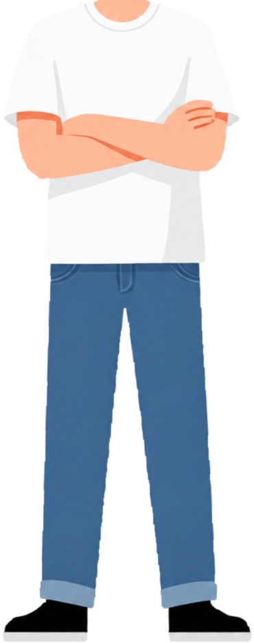

Scroll. He walks the three panels and the last one cuts to the approved front-facing drawing. Nothing is generated: three files, two rotations and a translation.
Panel backgrounds are placeholders. They are the next asset.

progress 0.00 · distance 0 px